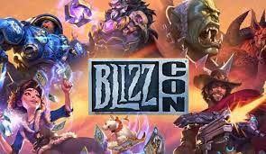
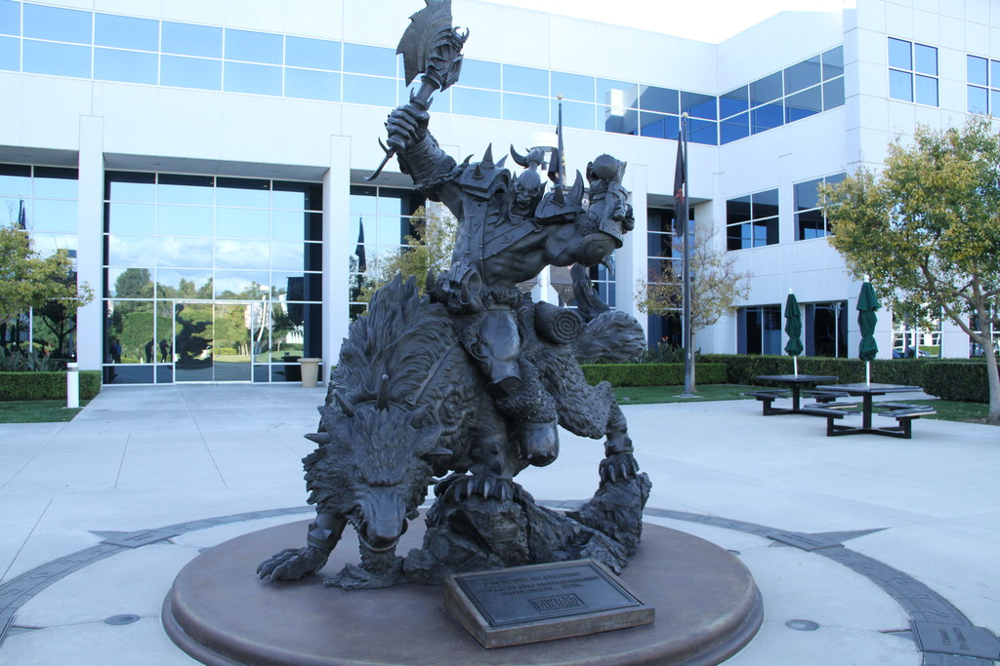

BIENVENIDO A BLIZZARD
Blizzard Entertainment, Inc. es una empresa desarrolladora y distribuidora de videojuegos estadounidense con sede en Irvine, California y fundada el 1 de febrero de 1994. Conocida y fundada originalmente como Silicon & Synapse en 1991, la empresa comenzó realizando portabilidades de juegos para otros estudios antes de desarrollar sus propios videojuegos en 1993, entre los que destacaron Rock N' Roll Racing y The Lost Vikings. En 1994 la compañía se renombró Blizzard Entertainment, Inc., su nombre actual, y poco después lanzó su primer gran éxito comercial, Warcraft: Orcs & Humans. Desde entonces, Blizzard ha logrado cosechar un gran éxito con las sagas Warcraft, Diablo y StarCraft, así como el MMORPG World of Warcraft, convirtiéndose en un referente de los géneros de estrategia en tiempo real3 y MMORPG.
Historia
1991
1994
2005

2008

Blizzard Entertainment fue fundada en febrero de 1991 por Michael Morhaime, Allen Adham, y Frank Pearce como Silicon & Synapse después de recibir los tres su título de grado por la UCLA. La empresa comenzó realizando portabilidades de juegos para otros estudios, como J.R.R. Tolkien's The Lord of the Rings, Vol. I y Battle Chess II: Chinese Chess. En 1993 la compañía desarrolló videojuegos como Rock N' Roll Racing y The Lost Vikings. Más tarde, en 1994, Silicon & Synapse fue comprada por la distribuidora Davidson & Associates por $6,75 millones.Ese mismo año renombraron la compañía a Chaos Studios, pero cambiaron el nombre de la empresa de videojuegos a Blizzard Entertainment Inc. debido a que ya existía otra empresa llamada Chaos. Poco después Blizzard lanzó su exitoso Warcraft: Orcs and Humans a través de Interplay Productions.
Juegos
- The Lost Vikings (1992) - Juego de plataformas
- Rock N' Roll Racing(1993) - Juego de carreras
- Blackthorne (también llamado Blackhawk) (1994) - Juego de plataformas
- The Death and Return of Superman (1994) - Beat 'em up de scroll horizontal
- Warcraft: Orcs & Humans (1994) - Juego de estrategia en tiempo real de fantasía
- Justice League Task Force (1995) - Juego de lucha uno contra uno
- The Lost Vikings II (1995) - Juego de plataformas
- Warcraft II: Tides of Darkness (1995) - Juego de estrategia en tiempo real de fantasía
- Warcraft II: Beyond the Dark Portal (1996) - Expansión
- Diablo (1996) - Juego de rol
- StarCraft (1998) - Juego de estrategia en tiempo real de ciencia ficción
- StarCraft: Brood War (1998) - Expansión
- Warcraft II: Battle.net Edition (1999) - Relanzamiento
- Diablo II (2000) - Juego de rol de acción
- Diablo II: Lord of Destruction (2001) - Expansión
- Warcraft III: Reign of Chaos (2002) - Juego de estrategia en tiempo real de fantasía
- Warcraft III: The Frozen Throne (2003) - Expansión
- Starcraft: Ghost (2003) - Juego RPG (Cancelado)
- World of Warcraft (2004) (2006 Localización española) - Juego de rol multijugador masivo en línea (MMORPG)
|
- World of Warcraft: The Burning Crusade (16 de enero de 2007) - Expansión
- World of Warcraft: Wrath of the Lich King (13 de noviembre de 2008) - Expansión
- Starcraft II: Wings of Liberty (Lanzado el 27 de julio de 2010) - Estrategia en tiempo real de ciencia ficción
- World of Warcraft: Cataclysm (Lanzado el 7 de diciembre de 2010) - Expansión
- Diablo III (Lanzado el 15 de mayo de 2012) - Juego de rol de acción
- World of Warcraft: Mists of Pandaria (Lanzado el 25 de septiembre de 2012) - Expansión
- StarCraft II: Heart of the Swarm (Lanzado el 12 de marzo de 2013) - Estrategia en tiempo real de ciencia ficción
- Hearthstone: Heroes of Warcraft (Lanzado el 13 de marzo de 2014) - Estrategia de cartas
- Diablo III: Reaper of souls (Lanzado el 25 de marzo de 2014) - Expansión
- World of Warcraft: Warlords of Draenor (Lanzado el 13 de noviembre de 2014) - Expansión
- Heroes of the Storm (Lanzado el 2 de junio de 2015) - MOBA
- StarCraft II: Legacy of the Void (Lanzado el 10 de noviembre de 2015) - Expansión
- Overwatch - (Lanzado el 24 de mayo de 2016) - Disparos en primera persona
- World of Warcraft: Legión - (Lanzado el 30 de agosto de 2016) - Expansión
- StarCraft Remastered - (14 de agosto de 2017)
- World of Warcraft: Battle for Azeroth - (Lanzado el 14 de agosto de 2018) - Expansión
- Warcraft III: Reforged - (Lanzado el 28 de enero de 2020) - Remake de Warcraft III + Expansiones
- World of Warcraft: Shadowlands - (Lanzado el 27 de octubre de 2020) - Expansión
|